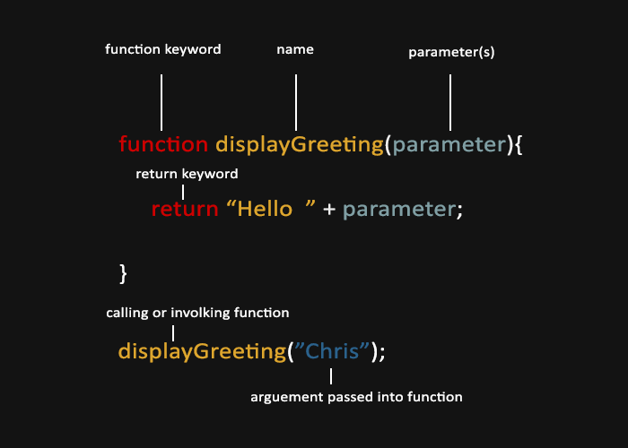

JavaScript Functions, Objects and Structure

Instructor: Chris Fulton
Learning Objectives
- Understanding and Implementing JS Functions
- What is a function | Function Syntax | Defining and Calling a Function | Function Parameters
- Types of function
- Named | Anonymous | Arrow | Self-Involking
- Variable Scope - Local and Global variables
- Returning values from a function
- Understanding and Implementing JS Objects
- Why use Objects
- User Defined Objects
- Types of Objects
- Object Literal | Anonymous | Arrow | Self-Involking
- Practice with Functions using Goople Maps API
- Practice with calling and involking functions
- Passing arguments to Google Map API
Types of Functions
Named and Anonymous Functions
Arrow Functions
Self Involking Functions
Each type have specific use cases
Named Function

- The above diagram displays a named function called displayGreeting. Two steps, 1) First define the function and 2) call the function.
- You can pass and return information from functions
In-class Activity
<!DOCTYPE html>
<html>
<head>
<title>Working with named Functions</title>
</head>
<body>
<div > Click Me </div>
</body>
</html>
Apply the following bullet points to the HTML code above.
- Create a named function called pageDetails(). The statements within the function will bring up a window alert box that outputs three things. 1) The documents doctype. 2) the document title and URL.
- Using the html code above add an event attribute to the <div> tag that will call the pageDetails() method once the end-user clicks the button.
Arrow Function

- Arrow functions allows a short syntax for writing function expressions. You don't need the function keyword, the return keyword, and the curly brackets.
- You can only omit the return keyword and the curly brackets if the function is a single statement.
JS Objects
What is OOP?
A way of organizing your code to focus on real world nouns (Person, place, thing or idea)
What is OOP?
Abstraction

Creating a simple model of a more complex thing, which represents its most important aspects in a way that is easy to work with for our program's purposes
Object Literal Structure and Break-down
- A JavaScript object is a collection of named values
- When you create an object, you define both its attributes and its methods.
- The attributes hold data for each object instance.
- the methods are verbs that take action against the data for each instance.
var person = {
name: "Parker Walker",
age: 29,
gender: "male",
interest: "everything",
bio: function(){
console.log( this.name + " is " + this.age + "years old.
They like " + this.interest);
},
greeting: function() {
console.log("Hi! I'm " + this.name);
}
}
Video Lectures
References
- https://developer.mozilla.org/en-US/docs/Learn/JavaScript/Objects/Object-oriented_JS
- https://css-tricks.com/snippets/css/a-guide-to-flexbox/